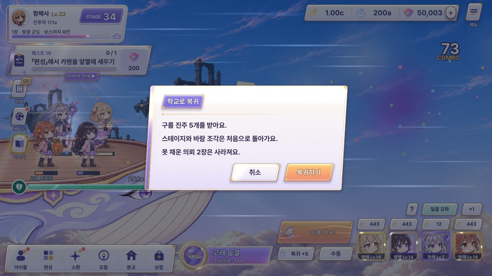
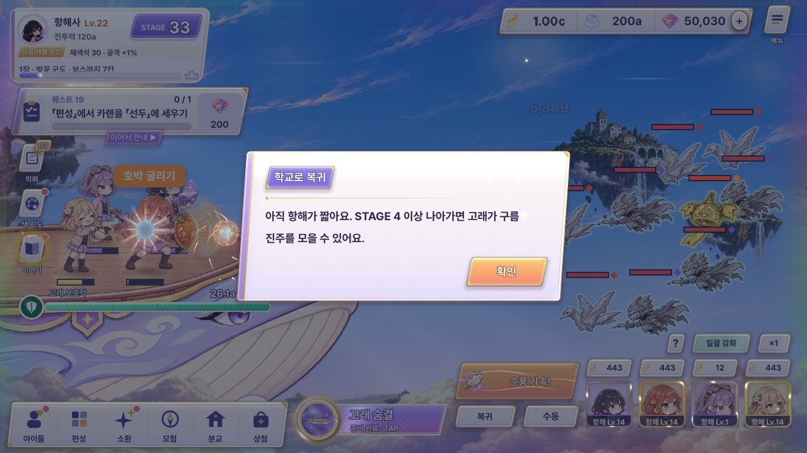
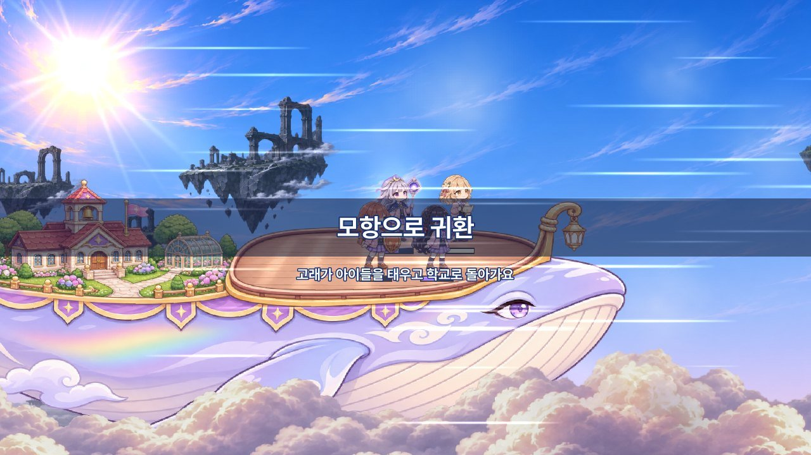
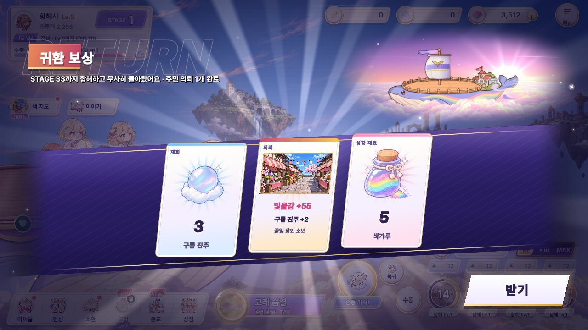
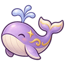

확인 → 연출 → 보상이 한 흐름입니다. 화면마다 A · B · C 중 하나를 눌러 고르고 「결과 복사」. 위 1280 / 1600 단추로 모든 틀 너비가 바뀝니다. 추천은 제 추천. 그대로 두는 것: 귀환 보상 윗 그림 「새벽 구름바다」, 보상 띠 카드가 진주 칸으로 날아감, 유나 토스트, 상단 가운데 알림 띠, 「복귀 ▶」 단추 경로, 오른쪽 책갈피 메뉴 틀. 「못 채운 의뢰」 문구는 모두 뺐습니다(#49).
이어 보기 띠 지금 고른 안이 자동으로 이어 붙음: 확인 → 연출 → 보상
D3-1 · 학교로 복귀 확인 scripts/hud.gd _ask_return
지금

A · 귀항 승선권 이걸로
귀항
표 한 장: 왼쪽 몸통에 받는 진주, 절취선 너머 오른쪽에 처음으로 돌아가는 것. 도장이 찍히며 결심을 굳힘.
비용: 중간 — 표 판 1장 + 도장 Tween. 절취 홈 모양은 셰이더 마스크 1개.
B · 저울 판 — 남는 것 / 처음으로 이걸로
남는 것
- +1,240
- 진주 강화 · 동료 · 장비 · 도감
처음으로
- STAGE 340 → 1
- 전투 레벨
- 순풍 · 항해 버프
무게로 설득: 진주 쪽 접시가 늘 아래로 기울어 「남는 게 더 무겁다」. 처음 해 보는 사람에게 가장 설명적.
비용: 낮음 — 판 1 + 막대 흔들림. 대신 글이 많아 매번 보는 창으로는 무거움.
C · 학교를 바라보는 고래 그림 카드 PD 선택이걸로
STAGE 340까지 왔어요. 처음부터 다시 출항하지만 진주는 그대로.
감정으로 설득: 고래가 멀리 섬(분교)을 바라보는 그림. 이야기 맛이 가장 진함, 정보는 진주 한 줄.
비용: 높음 — 그림 칸 층 3장 + 고래 흔들림. 「처음으로 돌아감」이 덜 드러남.
D3-2 · 복귀 불가 안내 (짧은 항해) hud.gd _ask_return · 진주 0
지금

A · 버튼 위 말풍선 이걸로
창 없이 누른 단추가 살짝 흔들리고 그 위에 뾰족 꼬리 말풍선. 네 칸 중 마지막 금 칸이 「복귀 가능」. 전투를 가리지 않음.
비용: 낮음 — 말풍선 1 + 흔들림. 1.5초 뒤 저절로 사라짐.
B · 작은 진행 막대 카드 이걸로
위 가운데(알림 띠 아래)에 흰 유리 카드가 내려와 막대가 차오름. 몇 칸 남았는지 가장 또렷.
비용: 중간 — 카드 1 + 막대 Tween. 화면 가운데를 잠깐 가림.
C · 유나 한마디 PD 선택이걸로
이미 쓰는 유나 토스트 결로 대답. 캐릭터 맛이 살고 새 부품이 거의 없음.
비용: 가장 낮음 — YunaToast 재사용. 대신 진행 정도는 숫자로만.
D3-3 · 귀환 연출 다시 그림 · D E F hud.gd return_banner · white_flash 자리 · 앞: D3-1 C 그림 카드 / 뒤: D3-4 C 기록 리본
지금

D · 고래가 집으로 데려다줌 추천이걸로
고래가 전환을 끌고 감: 전투가 앞 구름에 덮여 지나가고 → 고래가 구름 뒤에서 크게 뱃머리를 돌려 → 등 뒤로 새벽 해, 앞에서 모항 섬이 다가오며 멈춤 → 「모항 도착」 한 줄. 끝 장면이 보상 윗 그림 「새벽 구름바다」(왼쪽을 보는 고래 · 오른쪽 해)와 같은 구도라 그대로 이어짐.
비용: 중간 — 새 그림 0장(기존 고래 · 구름층 · 섬 · 돛 조각 재사용), 층 6개 Tween + 빛 스프라이트. 4.5초라 하루 여러 번엔 길어 화면 탭 = 건너뛰기(오른쪽 아래 안내, 누른 순간 장면을 앞 구름이 덮고 0.6초 만에 분교 화면) — 위 큰 화면을 직접 눌러 보세요.
E · 분교 종소리 · 아이들 이걸로
아이들 눈높이: 고래 등 분교의 종이 울리면 네 아이가 폴짝 뛰며 집 쪽으로 돌아서고 유나가 「종소리다! 다들, 집에 가자~」. 카메라가 빠지면 고래가 지나온 구름 위에 무지개 물감 자국이 남음 = 「하늘을 물들이는 소녀들」.
비용: 높음 — 아이 4명 뛰기 · 머리칼 늦게 따라오기(위쪽 기울임), 종 울림 고리, 무지개 자국 리본 1장 + 구름 물들임. 5초로 가장 김, 이야기 맛은 가장 진함.
F · 1.2초 구름 스침 이걸로
하루 3~10번 복귀하는 사람용: 카메라 앞을 구름 한 덩이가 스치며 전투를 덮고 지나가면 바로 분교 화면이 밀려 들어와 자리 잡고, 위 가운데 알림 띠 「모항 도착」. 연출 전체 1.2초, 기다림 없음.
비용: 가장 낮음 — 구름 판 1장(앞 · 뒤 조각) + 바람 줄기, 알림 띠는 hud_b2 그대로. 「고래가 돌아간다」 감정은 거의 없음.
이전 시안 · 불채택 (A 붓 띠 제목 · B 항로 지도 접힘 · C 노을 하늘 전환) — 펼쳐 보기
A · 붓 띠 제목 + 고래 뱃머리 돌림 불채택
전투가 걷히고 고래가 크게 뱃머리를 돌림 → 붓이 왼쪽에서 오른쪽으로 띠를 칠하며 제목. 끝이 붓결로 흐려져 잘린 단면 없음. 지금 띠·섬광 순서를 그대로 살림.
비용: 낮음 — 지금 return_banner에 붓 마스크 셰이더 1개 + 고래 뒤집기 Tween.
B · 항로 지도가 접힘 불채택
이번 항로가 점선으로 분교까지 그려지고, 지도 양 날개가 접혀 닫힘 = 한 판 끝. 「여기까지 왔다」 기록 맛.
비용: 중간 — 지도 판 3장 + 선 그리기. 새 그림 부품(종이) 필요, 1.5초 더 김.
C · 노을 하늘 전환 불채택
하늘 전체가 노을빛으로 물들고 해가 수평선에 걸림, 제목은 왼쪽 아래에 조용히. 글보다 공기로 말하는 안. 보상 윗 그림(새벽)과 저녁→새벽으로 이어짐.
비용: 중간 — 화면 전체 색 셰이더 1개(모바일 채움 비용). 띠가 없어 「귀환」 글자 존재감이 약함.
D3-4 · 귀환 보상 main.gd return_to_school → RewardPopup
지금

A · 분교 정문 환영 이걸로

STAGE 340최고 기록 갱신제목 자리를 둥근 정문 아치로 — 「보상」보다 「도착」이 먼저. 윗 그림은 아치 오른쪽에 작게 남김. 기록은 별도 카드 1장.
비용: 중간 — 아치 판 + 꽃잎. 윗 그림이 작아져 확정 그림의 존재감이 줄어듦.
B · 진주 항아리가 차오름 이걸로
띠 왼쪽 유리 항아리에 진주가 차오름 = 쌓이는 영구 성장을 눈으로. 기록은 카드 1장.
비용: 중간 — 항아리 셰이더(채움 높이) 1개. 카드가 날아가는 진주 칸과 항아리가 둘 다 「진주 모으는 곳」이라 겹침.
C · 기록 리본 PD 선택이걸로
지금 화면을 그대로 두고 제목 아래 크림 리본 한 줄만 더함. 기록 갱신이면 리본 끝에 「최고 기록」 꼬리표가 붙음. 확정 윗 그림 · 카드 흐름을 전혀 건드리지 않음.
비용: 가장 낮음 — 리본 1 + 펼침 Tween. 「환영」 감정은 A보다 약함.